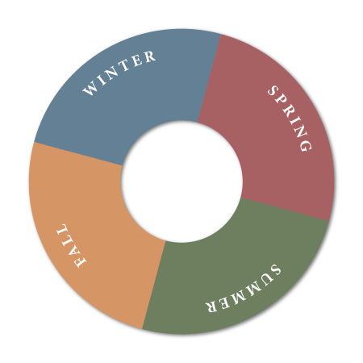
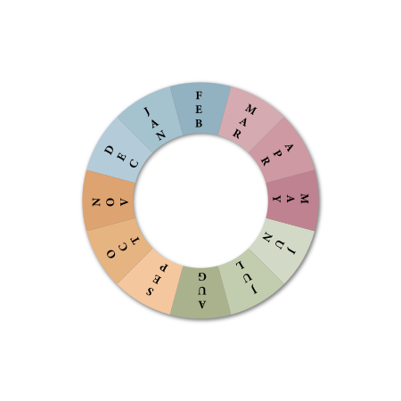
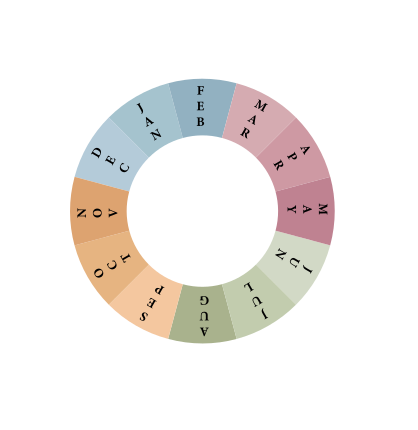

<style>
	#wheel img{
		position: absolute;
		width:350px;
		left: 5vw;
		top: 5vh;
		transition: transform 5s linear;
		transform: rotate(0deg);

	}
	#wheel .turn {
		transform: rotate(-45deg);
	}
	
	#wheel:hover .turn {
		
		transform: rotate(315deg);
		
	}
#arc { /* Props for the arc followed by the wheel  */
	stroke: darkgray;
	fill: none;
	stroke-width: .5;
}
	/*#wheel-group {
		width:24;
		height:24;
	}*/
</style>

<body>
	<svg id="svg-container" width="100%" height="100%" viewBox="0 0 100 50" xmlns="http://www.w3.org/2000/svg">


	 <path id="arc" d="M 1,50 A 50,50 0 0 1 99,50"  />
	
<g id="wheel-group" width="24" height="24" transform="translate(-12, -12)" >

		 <!-- Hide the wheel until data is loaded. This is probably unneccessary since it does 
		 	not solve the Safari bug -->	  	
		<image id="seasons-wheel" width="24" height="24"  xlink:href="../SVG/seasons2.svg" />
		<image id="months-wheel" width="24" height="24"xlink:href="../SVG/months2.svg" />
		<image id="window-wheel" class="turn" width="24" height="24" xlink:href="../SVG/window2.svg" >
					<animateTransform id="rotation" attributeName="transform" attributeType="XML" type="rotate" 
						from="37 12 12" to="-205 12 12" dur="24s" repeatCount="0" fill="freeze"
						begin="0s"
					   />
				</image>
		  
		  <animateMotion id="motion" 
			  repeatCount="0" 
			  dur="24s" 
			  keyPoints="0.1;0.9"
		      keyTimes="0;1"
		      calcMode="linear" 
		      fill="freeze"
		      begin="0s"
		      >
		      
		    <mpath href="#arc" />
		  </animateMotion>
	</g>
</svg>
	<!--
	<div id="wheel">
		
		
		
	</div>
-->
	<!--
	<div id="wheel">
			
		<!img  id="indicator_layer" src="../SVG/indicator.svg" />	
			
		<!img  id="window_layer" src="../SVG/window.svg" />	
	</div>
-->

</body>